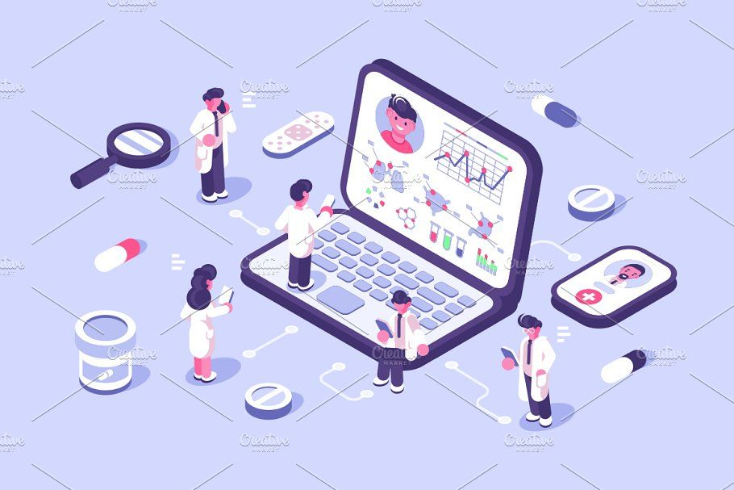
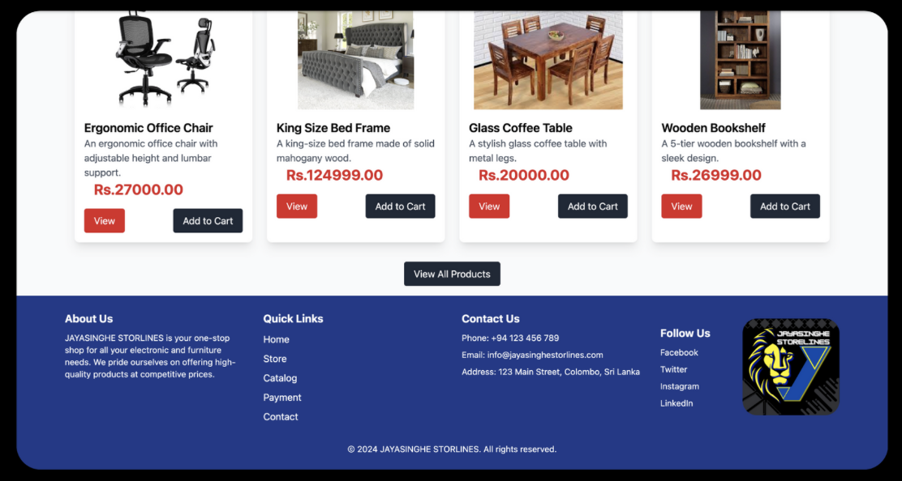
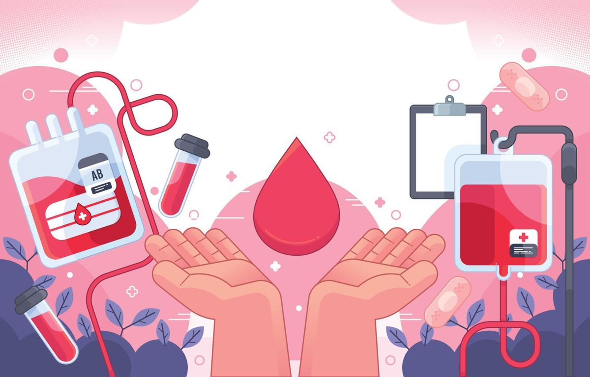

05 / Projects
Things I've Built
 Featured · Final-Year Research Capstone
Featured · Final-Year Research Capstone
SecureElderCare
Visual-Based Secure Elder Care Monitoring System Using Artificial Intelligence
An AI-powered system that monitors elder care using computer vision. This is my final-year research project, built with a four-member team.
My role
- Led the data modelling
- Led the requirements engineering
- Led the computer-vision logic design
How it works
- MoveNet for body pose
- MediaPipe FaceMesh for face tracking
- COCO-SSD for object detection
- A custom Temporal Heuristics Engine
Built with
- FastAPI backend
- React frontend
Key features
Presented to an academic panel with full technical documentation.

Medical History Management System
Problem: Patient records, prescriptions and pharmacy work were spread across separate systems, causing delays and a risk of clinical errors.
My role: I helped build the backend and wrote the full system requirements. I designed role-based access for 4 user types: patients, doctors, pharmacists and data entry staff.
Result: One MERN platform that keeps the whole clinical workflow in one place, with fewer manual handoffs and better data traceability.
Agri Connect – Smart Agricultural Platform
Problem: Farmers and agricultural learners had no single place to share knowledge, track plant care or monitor progress. They relied on scattered, informal methods.
My role: I designed the user journeys and system flows, then helped build the platform with React.js and Spring Boot.
Result: A community platform where users log plant care, track progress over time and share farming insights.

Jayasinghe Storelines – Online Selling Platform
Problem: Shoppers could not judge product quality, and the business had no organised way to answer customer questions.
My role: In a MERN team building a full online store, I built two modules: Reviews & Ratings (star ratings shown as an average on each product page) and Inquiry Management (customers ask product questions, and admins view and reply).
Result: Buyers gain confidence to purchase, and the business gets an organised way to hear from customers.
Online Examination Management System
Problem: Handling exam schedules, registrations and results by hand created extra admin work and delayed students getting their results.
My role: I built the whole system myself: the MySQL database, the Java Servlet backend and the frontend.
Result: Students can view schedules, register, take exams online and see results straight away. Admins no longer process these by hand.

Blood Donation System
Problem: Finding matching blood donors is slow and scattered. Hospitals struggle to find the right blood type in time, and donors cannot easily reach the hospitals that need them.
My role: I built the web platform from scratch with HTML, CSS, JavaScript, PHP and MySQL.
Result: It covers donor registration, blood type inventory, hospital requests and automatic donor matching.